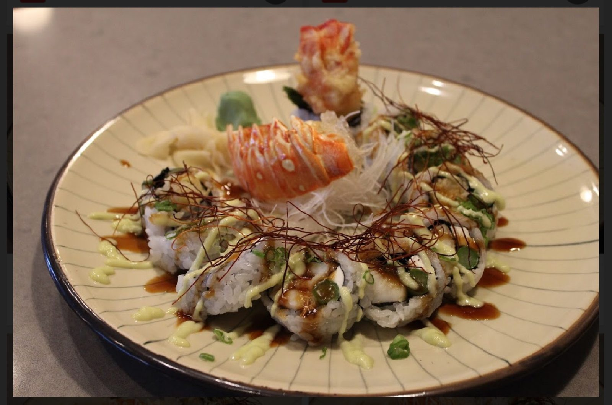
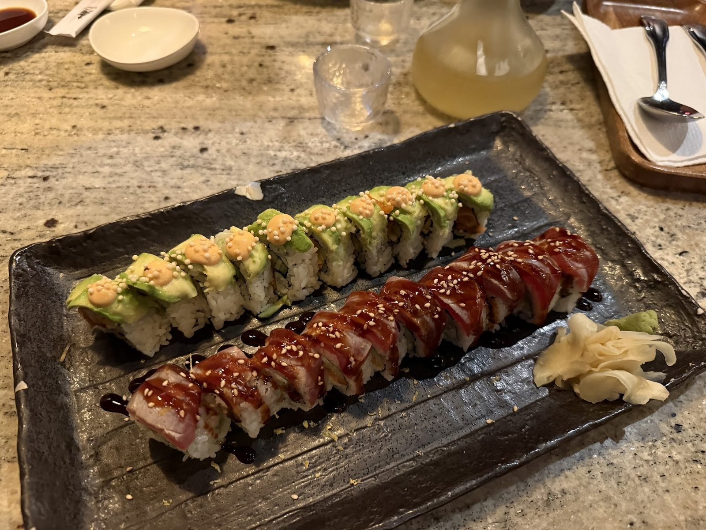
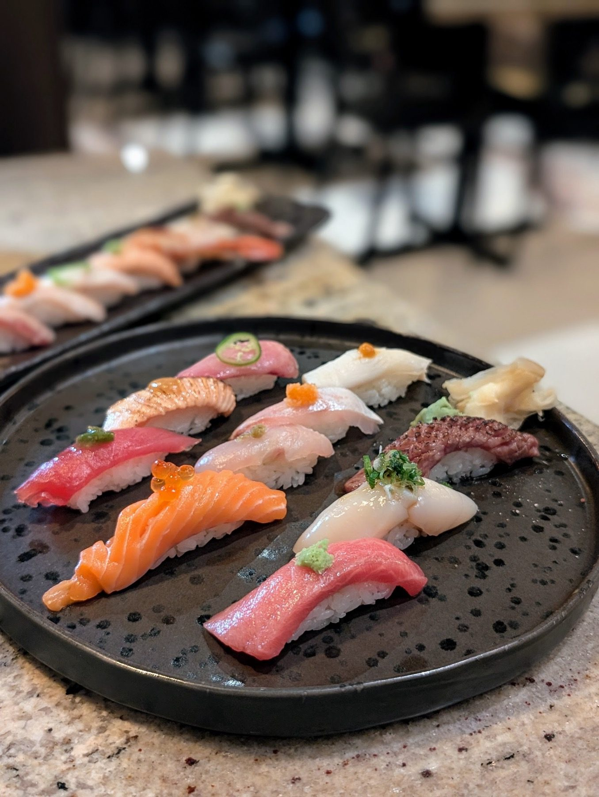

Sushi rolls
Specialty rolls from the sushi bar.
Umu · Zephyrhills
Umu Japanese&Thai serves Zephyrhills from Wesley Chapel.
Umu Japanese&Thai is based in Wesley Chapel and works with customers from Zephyrhills. Call (813) 591-6121 to ask about timing and directions.
Rolls, small plates and a sweet finish.

Specialty rolls from the sushi bar.

Small plates for the table, alongside miso soup.

Lunch specials, fresh and quick.
4.4 500 Google reviews
Fabulous, sophisticated yet casual cool atmosphere inside, and the outside area is laid back with tables and umbrellas. Everything was delicious from the miso soup to the various sushi rolls which were made to perfection. They have lunch specials that are fresh, tasty, and prepared by chefs that k ow what they are doing. What a pleasure. Our server Emily was friendly and so helpful. Excited to come back!
I was pleasantly surprised by the atmosphere. The music was great and not too loud, so we could easily have a conversation. It’s nice to have a local restaurant like this close to home. The food was delicious and came out very quickly. The staff was friendly and polite.
This restaurant is beautiful! Very welcoming and clean. The food is very good! I ordered a few rolls to share as well as the takoyaki which were amazing!! The dessert was surprisingly great!! We ordered the creme brûlée which had a nice thick outer shell perfectly caramelized. Service was good and catered to all our needs without being overly invasive. Overall great experience.
I’ve lost count of how many times I’ve come here/ ordered from here. This is my undeniable go-to restaurant for sushi. No restaurant in the area even comes close to the quality and affordability of UMU. And their Gyoza!!! To die for. The Twins Dragon roll and The Bomb roll are my favorites, I can’t recommend them enough.